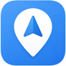

Voyager MapsThis stop isn’t on the map
The page you were looking for doesn’t exist — but plenty of useful places do. Pick a map to keep going.

Voyager MapsThe page you were looking for doesn’t exist — but plenty of useful places do. Pick a map to keep going.